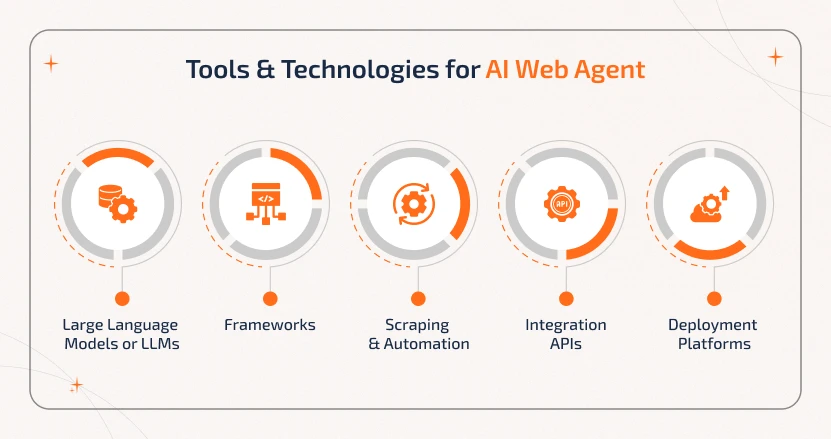
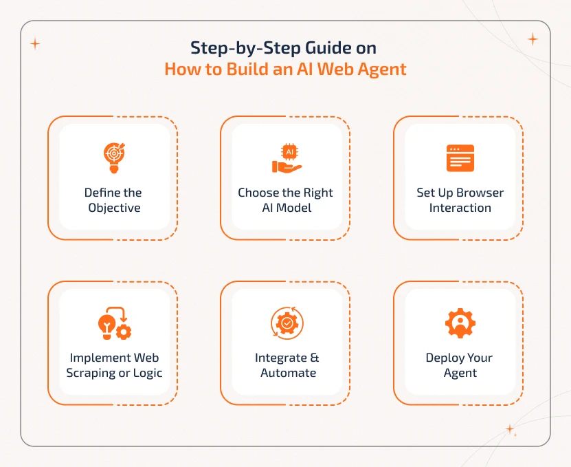
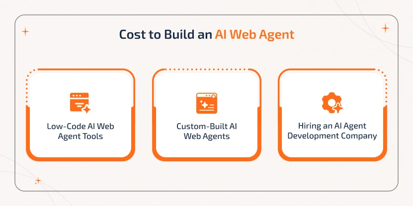
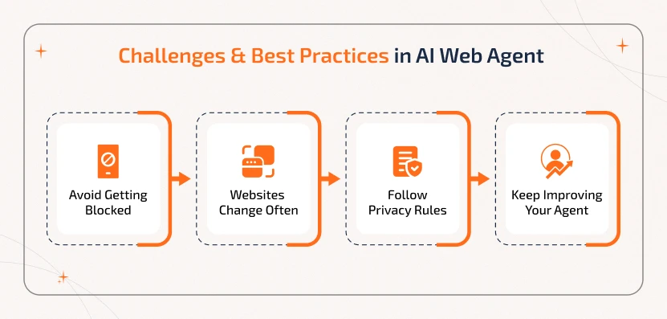

We are in a digital world that evolves and transforms every now and then. It is hence obvious to see many of our routine tasks that once took up time have now been handled by web AI agents . They are primarily helping businesses deal with everything from gathering data to filling out forms and managing customer requests. That's why learning about how to build an AI web agent is becoming important. They automate tasks in a faster and smarter way when compared to the human workforce. This not only saves time but also makes business operations more efficient.
Whether you are a business owner or a professional, you will learn exactly how to build one that can make your work easier and help your business run smoother.
A modern AI web agent is not just smart—rather, it takes action. They are unlike traditional chatbots and function autonomously, i.e., they can extract data, simulate user behavior, and automate end-to-end tasks. With the acceleration of AI adoption, businesses across industries such as healthcare and finance are building their own intelligent web agents.
The core offerings of AI web agent solutions are listed below:
- Handles live chat support and automates form submissions by working as a web-based AI bot.
- By working as a web scraping AI agent, it collects insights for research and analysis.
- Uses browser automation powered by AI to mimic real user behavior.
- Optimizes business operations by enabling AI-driven workflow automation across SaaS platforms.
These capabilities make them an invaluable tech advancement for business owners and developers looking for efficient and reliable AI automation for web tasks.
All That You Need To Plan for Your AI Web Agent
Having a clear plan is the basic thing before starting the coding portion. This will help you build your AI web agent that works efficiently and doesn't bring any roadblocks in between. The key questions that you shall consider for planning for the type of AI web agent are as follows:
| Planning Aspect | Questions to Ask | Why It Matters |
|---|---|---|
| Type of Agent | What kind of AI web agent are you building? | It defines your agent’s purpose, sales support, website building, etc. |
| Natural Language Needs | Will the agent need to understand or use human language? | This determines if you need natural language processing capabilities |
| Technical Skills | Are you a developer or do you prefer low-code solutions? | Helps choose the right tools, coding vs. low-code platforms |
| Planning Importance | Why is planning important before development? | This ensures smoother, faster development and successful deployment |
Start with a smart strategy to avoid roadblocks and build efficient, goal-driven AI agents.

Tools & Technologies
Choosing the industry-standard tools and technologies is vital for building an intelligent web agent. The most popular tech stack to get started is as follows:

1. Large Language Models or LLMs
To understand and generate natural language, you shall choose between:
- GPT-4
- Claude
- BERT
2. Frameworks To manage complex workflows and agent logic, opt between:
- LangChain
- Auto-GPT
3. Scraping & Automation To better navigate websites and automate browser actions, you shall choose either:
- Selenium
- Puppeteer
4. Integration APIs To use AI capabilities and connect with different apps or services, you shall use:
- OpenAI API
- Zapier
5. Deployment Platforms For hosting and scaling your agent, you shall choose:
- AWS Lambda
- Vercel
- No-Code AI agent platforms
GPT-powered web agents come with advanced language understanding and possess the ability to interact with the web. For this reason, many developers rely on GPT-powered tools. By choosing the right web AI agent platform and tools, developers can ensure the delivery of effective and intelligent web agents that are tailored to business needs.
Step-by-Step Guide on How to Build an AI Web Agent
Building an AI web agent is a simple process when following a step-by-step development procedure.

Step 1: Define the Objective
This step involves identifying the tasks you want your agent to perform. For instance, determine whether you are creating an AI assistant for the web that interacts with your users or collects information as a data scraper.
Step 2: Choose the Right AI Model
With a clear objective, you should proceed with choosing the AI model to handle specific tasks. For instance, GPT works well for tasks involving conversation or language, while custom machine learning models work for rule-based decisions or structured workflows.
Step 3: Set Up Browser Interaction
During this step, you shall choose tools like Selenium or Puppeteer to enable web automation using AI models. With the help of these tools, your agent can simulate real user actions. This includes, but is not limited to, navigating, clicking, typing, etc., through webpages.
Step 4: Implement Web Scraping or Logic
During this step, you need to develop an intelligent web crawling agent that understands and interacts with the web page structure. This is key to pulling data accurately and efficiently.
Step 5: Integrate and Automate
In this step, you should connect your agent to APIs or AI task automation tools to optimize processes across platforms. With this, your agent will work end-to-end without requiring any manual input.
Step 6: Deploy Your Agent
The last step in development is to proceed with deployment when your agent is ready. It is vital to choose secure and scalable hosting so your agent can work reliably and handle real-world tasks.
Follow a proven step-by-step process to launch intelligent, task-ready AI agents faster.
Real-World Use Cases
AI web agents are already making big differences across industries. Whether you are in sales, support, or strategy planning, AI web agent solutions fit your needs, streamline operations, and help you stay ahead in the competitive market. The following are some of the ways they are being used:
1. Customer Support
A web-based AI bot is used for handling common questions asked by customers, providing instant answers, and guiding them. This way, they reduce human agents’ workload and offer the opportunity to handle more complex tasks.
2. Lead Generation
We could see an AI agent for website automatically filling out forms on high-traffic websites used to collect leads. This, in turn, reduces manual work and saves hours of time for the sales team.
3. Workflow Automation
AI web agents do the work of sending emails, connecting with CRMs, updating spreadsheets, and triggering tasks. This way, AI bots for website automation reduce human error and improve efficiency.
4. Data Aggregation & Competitive Research
A web scraping AI agent works in such a way that it monitors competitor websites, gathers pricing information, and updates you with market trends in real-time.
How Much Does it Cost to Build an AI Web Agent?
Whether you want to automate tasks across websites or SaaS platforms, knowing the cost of building an AI web agent helps you make the right decisions when it comes to technical and budget needs. The development cost of an AI web agent varies depending on the business goals, technical approach, and the tools you rely on. In addition, other factors that affect the cost range include the complexity of the agent's tasks, support for NLP, usage-based API costs, and the cloud/server infrastructure needed to run and scale the agent.

1. Low-Code AI Web Agent Tools
If you prefer quick setups without heavy coding, low-code AI web agent tools work well. They may range from $0 to $100/month and can be used to develop agents that handle simple automation and web-based interactions.
2. Custom-Built AI Web Agents
Whether you want to include advanced features like browser automation, intelligent scraping, or workflow operations, these agents will work well. Hiring developers or building an in-house team costs anywhere between $5,000 to $50,000+.
3. Hiring an AI Agent Development Company
You can hire a trusted AI agent development company like Sparkout Tech to develop AI web agents. In this approach, you will work with professionals who help reduce technical risk and speed up delivery. This is especially useful when it comes to complex web automation needs.
See what it really takes—low-code, custom, or expert-built AI web agents.
Challenges & Best Practices
Despite the advantages offered by AI web agents, they come with their own set of challenges. However, choosing the right approach will help you avoid common pitfalls and ensure long-term success. Take a look at what will work out:

1. Avoid Getting Blocked
Some websites use tools to block bots. In order to avoid this, you can make your agent act like a real human. i.e., using delays, random clicks, and changing IP addresses when needed.
2. Websites Change Often
No matter what, web pages will not remain the same forever. Hence, you should keep your agent updated so it can find the right buttons and information after layout changes.
3. Follow Privacy Rules
Ensure your AI agent for website follows privacy laws like GDPR and CCPA. This way, you can ensure the personal data of your users is kept safe.
4. Keep Improving Your Agent
It is vital to set up feedback to see if your agent is performing correctly. With this approach, you can fix issues and make it smarter over time.
The Future of AI Web Agents
With the ever-evolving nature of AI, web agents are transforming beyond simple automation. We can expect them to become more intelligent in the near future. They will be capable of autonomous reasoning, real-time decision-making, and tighter integration with tools like IoT devices, voice assistants, and cloud platforms.
Industries like finance and healthcare continue to use web agents to go beyond just what's possible with AI workflow automation. This includes everything from data analysis to customer handling with minimal manual input.
Adding to this evolution, an AI visual website agent brings a new layer of intelligence by navigating and interacting with websites visually. These visual agents recognize buttons, layouts, and images, similar to a regular human being. This advancement makes it ideal for tasks, including automated testing, form submissions, and real-world support.
We can expect a clear distinction between a chatbot and an AI agent for website. i.e., while a chatbot can perform conversations, AI web agents will be recognized for their ability to take action online, adapt to changing environments, and integrate across web-based systems.
Why Choose Sparkout Tech to Build Your AI Web Agent?
When it comes to building a reliable, intelligent, and efficient AI web agent, choosing the right partner company is vital. You can choose Sparkout Tech for the following reasons:
1. We have proven AI expertise and hands-on experience. With the latest AI models, browser automation tools, and workflow platform support, we build web agents that help businesses stay ahead.
2. Our custom solutions include chatbot-styled assistants, web-scraping agents, and fully autonomous AI workflow agents. We tailor solutions that fit your business needs.
3. We take up end-to-end development that covers everything from design, integration, testing, and secure deployment. With Sparkout Tech by your side, you can focus on your business growth.
4. Our AI web agents will grow with your business. We build solutions that are scalable and adaptable in a fast-changing tech landscape.
5. We build AI agents for every business type, ranging from finance, healthcare, e-commerce, and beyond. At Sparkout Tech, we provide faster delivery and our solutions provide better results.
Choosing Sparkout Tech means that you are partnering with a strategic partner whose solutions drive success.
With proven AI expertise, tailored solutions, & end-to-end support, we build scalable AI web agents that grow with your business and deliver real results.
Conclusion
Building an AI web agent is not just for experts. Rather, with the right tools, creating anything from a scraper to a sales-generating virtual agent is possible. With a small start and by using low-code platforms, your agents will evolve over time based on feedback. Whether you are automating business operations or building one for personal productivity, AI web agents are your blueprint to success.